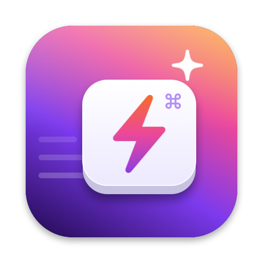
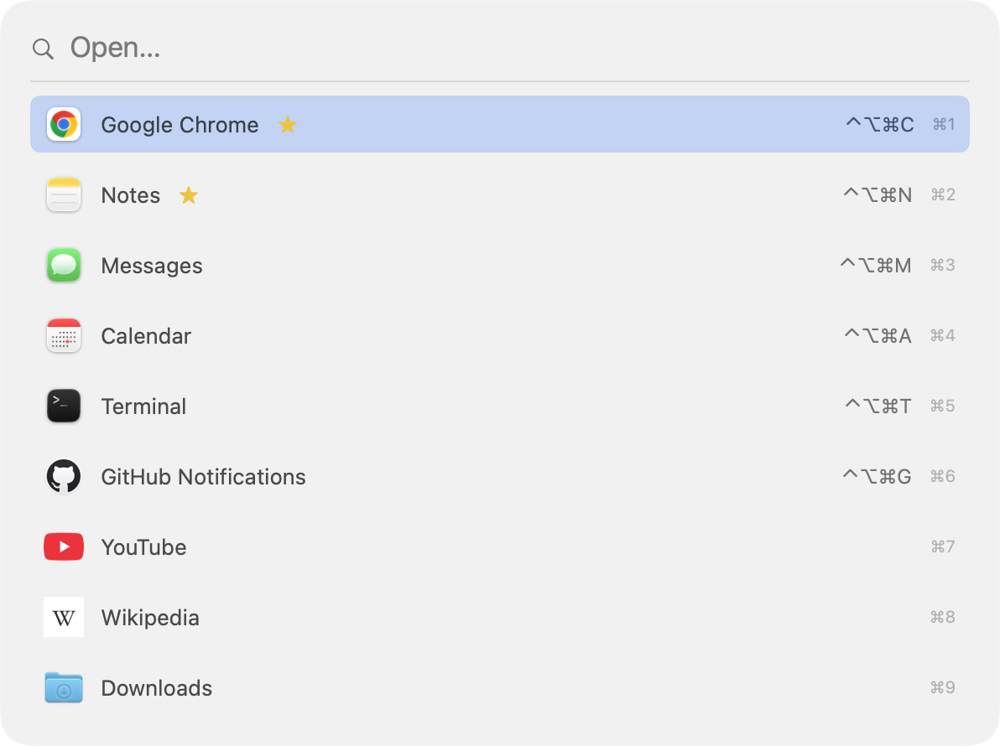
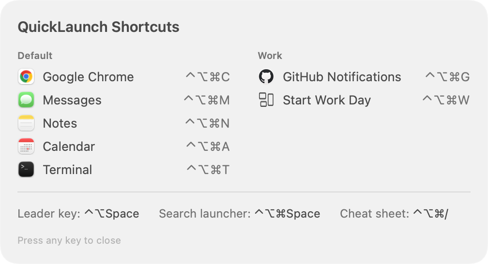

Open anything with a keystroke.
QuickLaunch lives in your menu bar and opens apps, websites, files, scripts and Shortcuts from anywhere. It checks every shortcut before it's saved, so it won't fight the rest of your Mac.
Everything a launcher should do
Bind a combination, press it anywhere, done. Plus a few things other launchers skip.
Global shortcuts
Apps, URLs, files and folders, shell commands, Shortcuts.app shortcuts, and workspaces that open several things at once.
Conflict checking
Warns if a combination is already used by macOS, another app's hotkey, a custom App Shortcut, a Service, or another link.
Test it live
After you record a shortcut, press it once. QuickLaunch confirms the press arrived, or tells you something else is intercepting it.
Leader key
One shortcut, then a single letter. Open dozens of things while remembering just one combination.
Search launcher
Spotlight-style fuzzy search over all your links, with your most used links first.
iCloud sync
Your setup follows you to every Mac signed in to your Apple Account, with automatic local backups.
Pause in certain apps
Shortcuts switch off automatically while games, VMs or remote desktop apps are in front.
Windows, your way
Cycle an app's windows, or open it at left half, right half, maximized or centered.optional
Favorites
Star the links you use most. They get their own section at the top of the menu and come first in search.
Real icons
Website links show the site's own icon automatically. Give any link a custom image, or borrow an app's icon.
Insights
See what you use and what you never touch, plus apps you open often without a shortcut.
Leader key
Press your leader shortcut, then one letter. Letters come from your link names automatically, and you can set your own for any link.

Search launcher
Type a few letters, then press ↩. Use ⌘1–⌘9 to jump straight to a result.

Cheat sheet
Forgot a shortcut? One keystroke shows them all, grouped the way you organized them.
